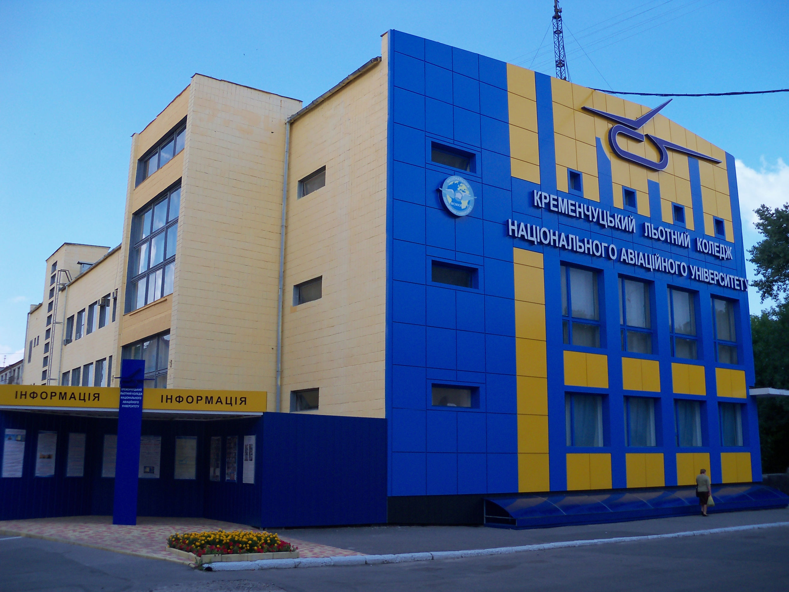
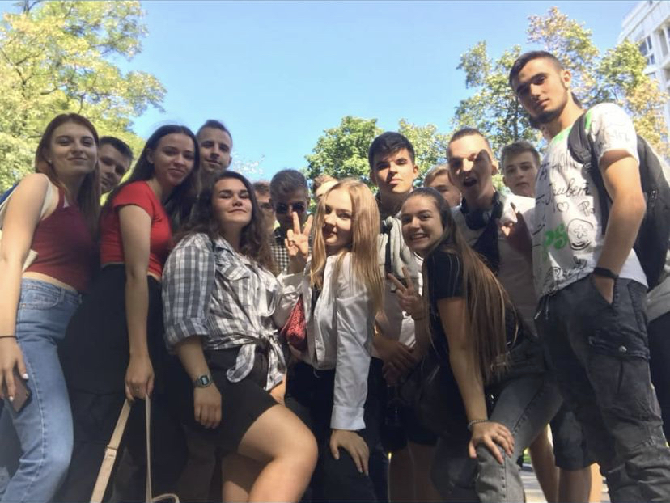

У 2017 році закінчила дев'ятий клас Кременчуцького колегіуму №25.
У тому ж році вступила до Кременчуцького льотного коледжу Харківського національного університету внутрішніх справ на спеціальність "Облік і оподаткування". Через три роки закінчила навчальний заклад з дипломом з відзнакою.
Але цього мені було мало. Тому я вирішила йти далі та розвиватися у інших напрямках. У 2020 році вступила до Національного авіаційного університету у м. Київ, спеціальність - "Кібербезпека". На даний момент я навчаюсь на другому курсі.
Сподіваюсь після закінчення університету в мене буде багато можливостей, щоб знайти собі гарну роботу, від якої я буду отримувати максимум задоволення.
Але зараз я насолоджуюсь навчанням з моїми одногруппниками:)
Володію такими мовами як: